Malaysian Life Simulator
“You don't choose where you're born. Everything after that is yours.”
Sit for SPM, take a PTPTN loan, buy the Myvi, balik kampung for Raya, run for Parliament, then pass it all on to your kids.
Play nowA whole life, one year at a time
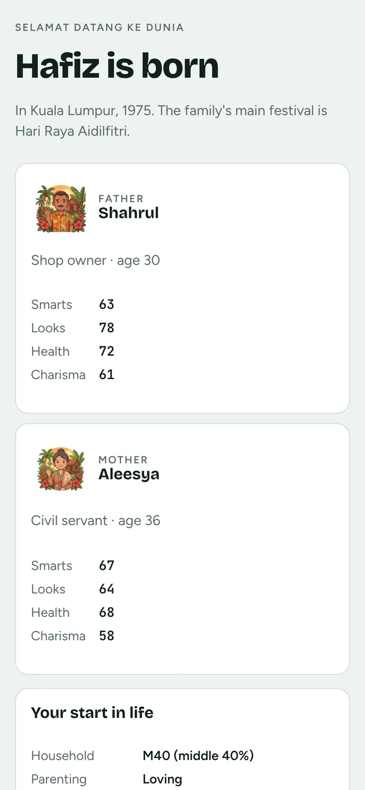
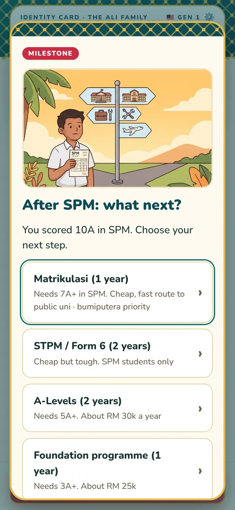
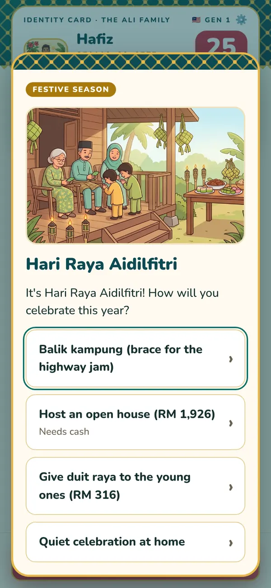
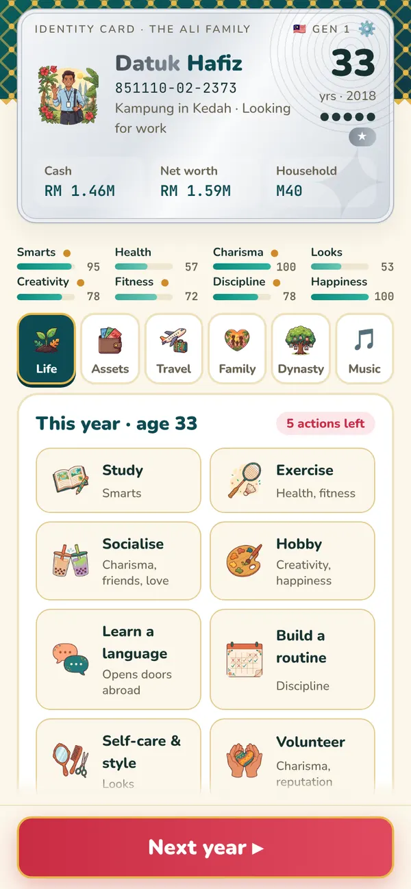
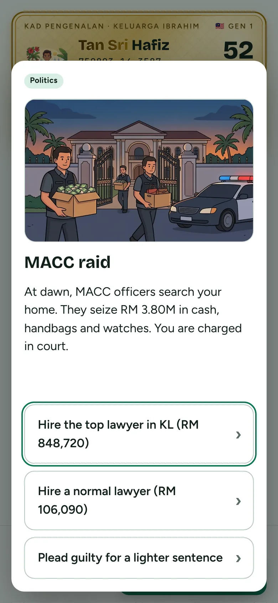
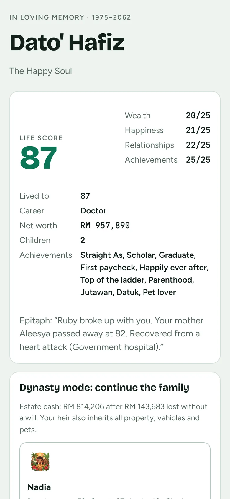
Which Hafiz would you be?
We played the same start twice. Same parents, same kampung, same year. Only the choices changed.
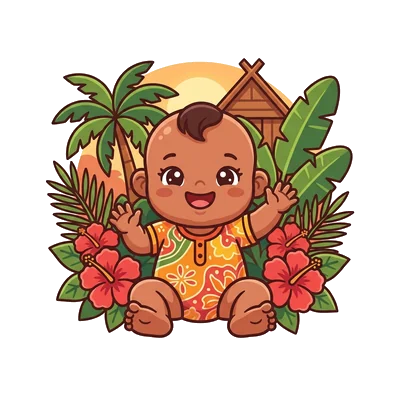
Son of a lorry driver and a clerk. B40 household, relaxed parents.
Dr Hafiz
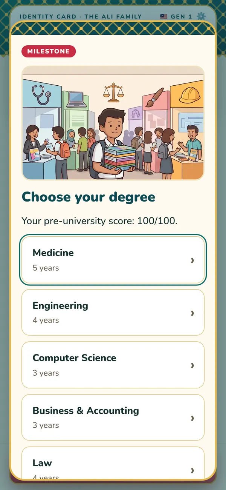
10A in SPM and a JPA scholarship. Matrikulasi, then Medicine at UKM.
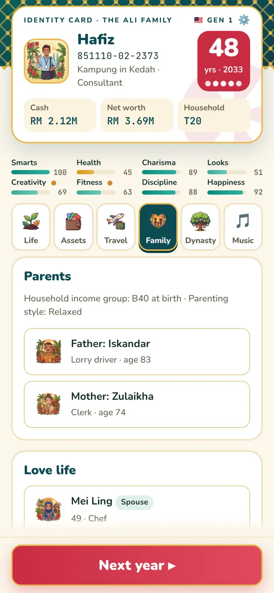
A consultant. Married to Mei Ling, with Nur Aina and Aidil.
Retires at 60, dies at 63. Nur Aina or Aidil can carry on the family.
Datuk Hafiz
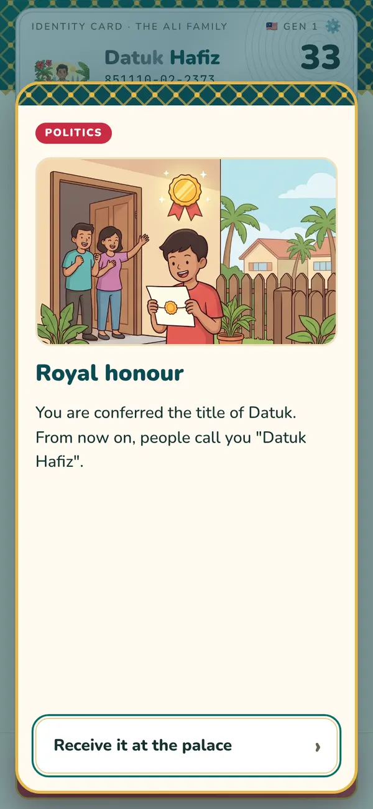
MP for Sik at 23, a minister at 29, made a Datuk at 33.
Years of "commissions" on constituency projects. MACC seizes RM 812,916. Ten years in prison.
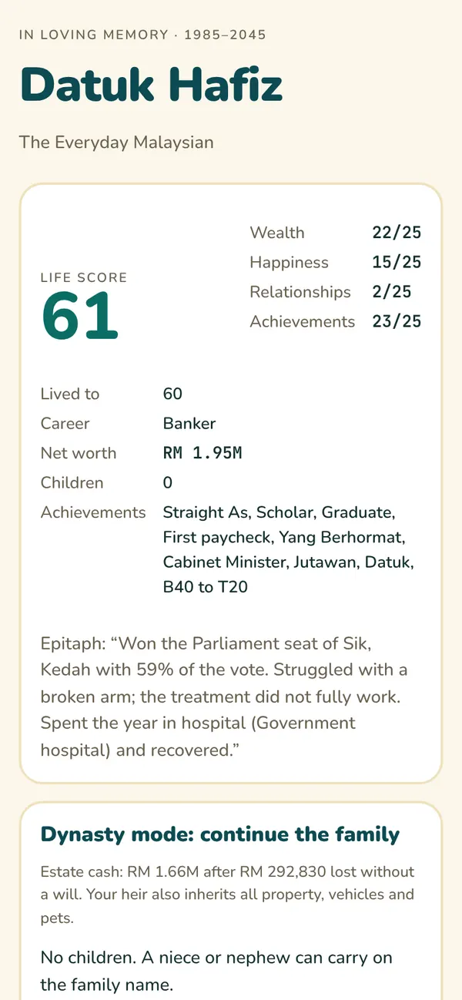
Released at 50, wins Sik back at 56, dies at 60 with no children.
Five themes, fourteen songs
Pick Songket, Peranakan, Malam (night mode), Kampung or Batik Biru. The soundtrack changes as you grow up, and switches for Raya, weddings and hard times.
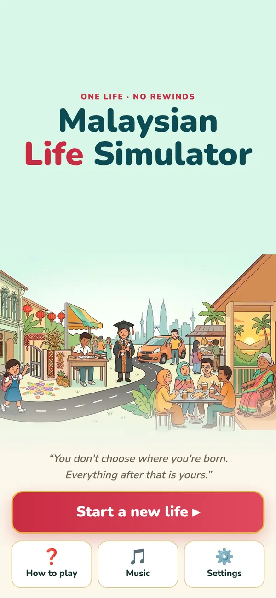
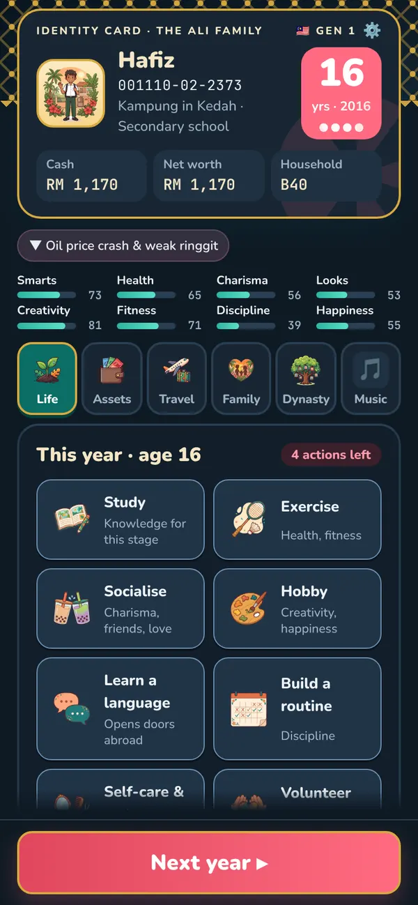
Three steps, about a minute a year
- Spend your actions
Each year you get a few actions. Study, exercise, socialise, date, work overtime, or contribute to the nation.
- Make the call
Life throws pop-ups at you: SPM results, a scholarship, a marriage proposal, Raya plans, an envelope of cash.
- Press Next year
Live with what you chose. When you die you get a life score, and your heir picks up where you left off.